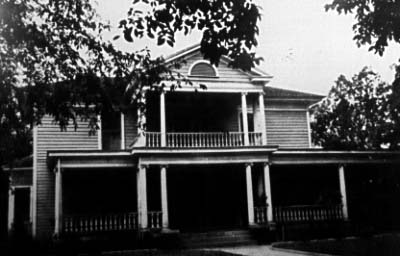
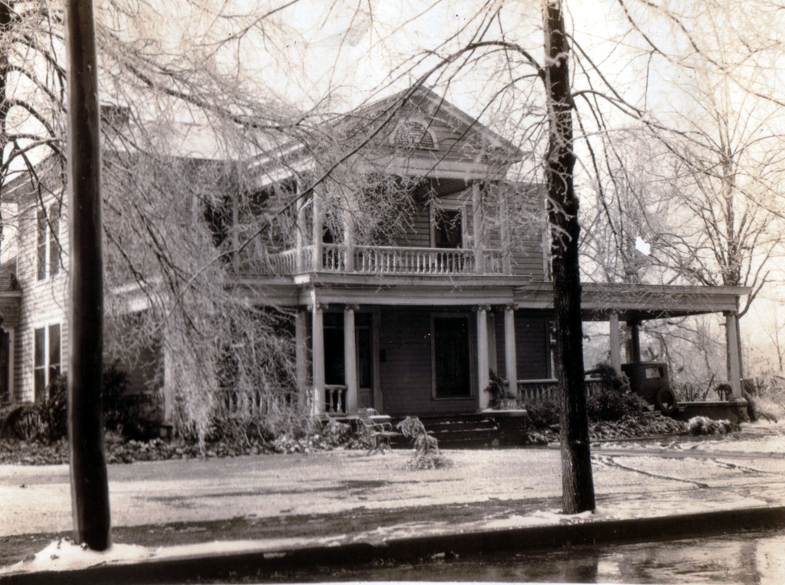

These are photographs of the house William John RUDGE and his wife Ethel Josephine nee ADAMS RUDGE lived with their family on 500 Washington Street. Prior to them it was owned by her parents, Henry Bethune ADAMS and his wife Fanny nee PERSON ADAMS. The house burned down ca. 1945 or so, prompting Ethel Josephine to move in with her sister, Nina nee ADAMS HOUSTON, and her sister's husband Dr. William Cyrus HOUSTON in Concord.
Last updated on 15 Mar 2008